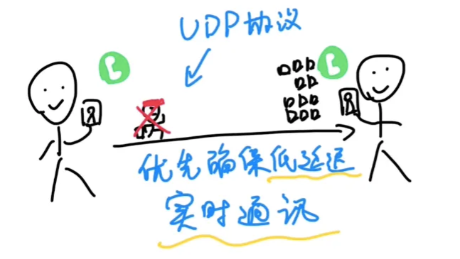
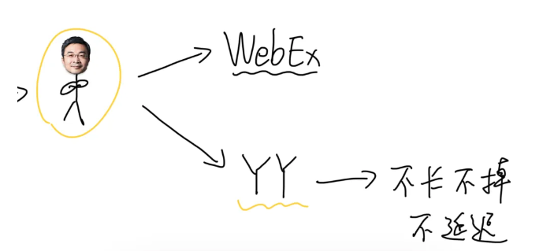
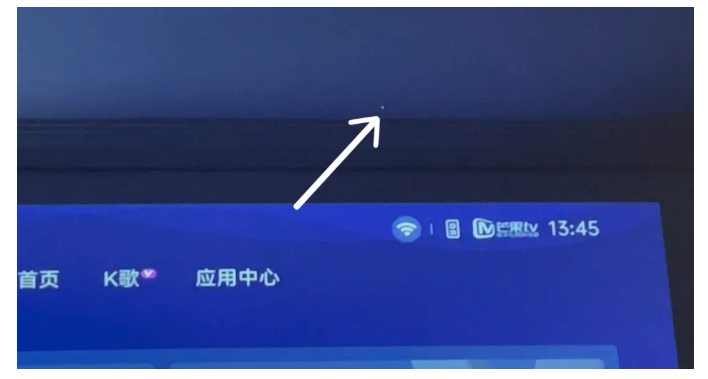
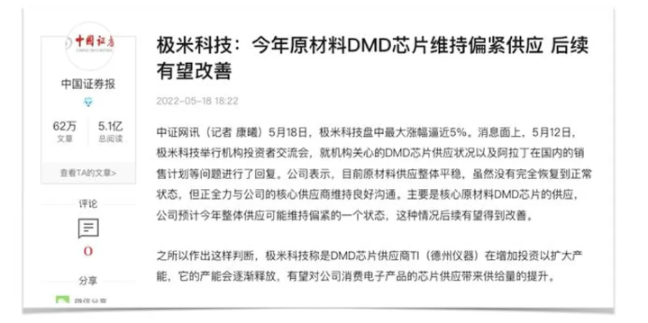

操纵股价和内幕交易，会让股市变得不公平。
为了防止这些违规行为，中国的股票交易所想了很多办法。其中一个很重要的办法就是：每天（工作日）下午股市停止交易以后，大概四、点钟，交易所就从所有股票里把当天最热闹、最反常的给公布出来。

并且披露这些股票当天的交易信息：买的最多的前五名是谁，分别买了多少钱，卖得最多的是谁，分别又卖了多少钱。
这样一来，那些想割韭菜的人就会有所忌惮，因他们一旦闹出的动静太大，这支股票的交易信息就可能被交易所曝光出来，里头的违规交易动作就更容易被股民们乃至监管部门注意到。
有意思的是：交易所每天公开一些股票的交易信息，本意是为了曝光异常情况，维护市场公平和提高透明度。结果股民们一看：欸？这些数据，很适合用来分析股票啊！

于是就给它起了个名字叫「龙虎榜」，意思是这些被曝光的股票像龙和虎一样引人注目。随着越来越多的股民关注龙虎榜，龙虎榜也就成了中国股民们的股票分析工具之一。
欸，那么问题就来了：
- 什么样的股票会上榜，被公开交易信息？
- 上了榜的股票，会被公开哪些交易信息？
以及最关键的：
- 老股民们是怎么用这些信息来分析股票？
今天这期视频就给大家通俗解释一下。
先看一只股票为什么会上龙虎榜，比较常见的情况有：
一、当日的涨跌幅度特别「与众不同」，比如别的同类型股票普遍只涨了百分之一，它却涨了百分之八。
或者别的股票普遍跌了百分之二，它却跌了百分之九——总之跟大盘偏离超过7%，就有可能上龙虎榜。
第二种情况是一只股票当天的换手率特别高，比如一天之内，一家公司有20%的股票都被转手买卖过，就也有可能上龙虎榜。

三是当日价格振幅特别大，就是一天之内只要一只股票的价格上下浮动达到当天最低价的15%，就也有可能上榜。
刚才说的这些，如果某一个条件有很多只股票都满足，就会选出前五只股票。
除了这几条，上榜理由一共有十五、六条，太多了所以不太可能也不需要去硬记。只需要知道，绝大多数规则都是围绕「异常」这个原则来制定的。
正所谓「事出反常必有妖，股票异常怕藏刀」，所以交易所才要每天把这些相对异常的股票拎出来见见光嘛。
一只股票上了龙虎榜，会被公开哪些交易信息？
首先是当天买入这只股票最多的前五位，以及卖出最多的前五位。 通常显示的是「某某证券公司的某某营业部」之类的。
因为个人买卖股票一般都要通过证券公司营业部来完成。而机构投资者，比如公募基金、银行、保险公司等等，它们有自己的机构专用席位，不需要通过某个证券公司的营业部来下单。
所以机构投资者在龙虎榜上通常显示为「机构专用」。

另外，如果显示为：港股通或者沪股通，就表示是外资通过这些专门的渠道来买卖A股股票。
除此之外，如果这只股票是在上海证券交易所上市的，会显示买入前五名的买入金额，以及卖出前五名的卖出金额。
而如果是在深圳证券交易所上市的股票，则会同时把买入和卖出金额都显示出来。
欸？为什么同一个营业部既有买入又有卖出呢？
因为同一个营业部有的人在买，有的人在卖，或者早上卖，下午买，所以会出现既有卖出又有买入的情况。
好，现在有了这些信息，股民怎么利用它来分析股票呢？
其实很简单，一只股票是涨还是跌，最终要看买方和卖方之间对抗的情况——买的多就会涨，卖的多就会跌嘛。

而通过龙虎榜，你可以直接看到买卖双方前五名的交易情况，相当于一场对战，你能看到双方主帅的交手情况。那么就可以据此来预估接下来哪边的赢面更大，决定押注哪一边。
我举一个比较夸张的例子：
一只股票的买方阵营这边，全都是机构，而卖方这边都是一些小卡拉米营业部，并且买入资金比卖出资金要多。这种情况下，短期来看买方的赢面肯定更大。因为机构投资者相对来说资金通常非常雄厚，更倾向于长期投资也加坚定。
所以这只股票在短期内上涨的潜力比较大。
不过这个例子有点夸张，现实情况当中，买卖双方往往半斤八两，能打得有来有回。这个时候想预判接下来的局面，就得更细致地了解每一个角色的实力和风格。
除了机构以外，最能在短期内影响股价的，就数游资了。
游资是什么呢？像电视剧《繁花》里的宝总舰队或者麒麟会那样的就是游资，而大反派强慕杰是机构南国投这家机构的经理。
游资虽然资金量比不过机构，却比一般的散户要多得多。

人们通过各种数据和消息，摸清了一些营业部和游资之间的对应关系。
这些游资有的是用地名来命名，比如温州帮、深圳帮、山东帮。有的是用化名或者网名，比如陈小群、方新侠、赵老哥、小鳄鱼、北京炒家、作手新一。还有的大家直接用营业部所在街道来称呼，比如宁波桑田路、北京呼家楼、深圳欢乐海岸等等。
他们游资各有各的实力、风格、口碑，形成了一个游资江湖，共同影响着很多股票的短期走势。
很多炒股软件的龙虎榜都有现成的标签，把游资标注出来，方便股民们根据这些游资的风格来判断股票走势。
如果某个游资实力又强口碑又好，那只要他一出现在龙虎榜上，就会有很多散户跟着他买卖。
反过来，如果一个游资口碑非常不好，经常吸引散户跟风接盘，那么懂行的股民见到他就会避开。
总之，当你认识了各种营业部背后的游资，再来看龙虎榜，就更容易判断买卖双方对抗的局面走势嘛~
不过我得多说两句，龙虎榜的信息可以作为一种参考，但千万不要迷信，因为它有很多缺陷。
首先，龙虎榜的信息是滞后的，当你看到龙虎榜的时候，已经收盘无法再交易了，龙虎榜上的信息，已经体现在股价上了，而明天会发生什么又无法预料。
其次，龙虎榜是信息非常片面，它只披露买卖双方前五名的情况，但前五名很强不一定代表就能赢。
龙虎榜的信息还非常模糊和不确定，虽然我们能知道一个游资用的是哪个营业部，但是别人也可以用这个营业部啊，于是就有人故意冒充知名游资，骗他的粉丝们跟风然后收割他们。甚至听说还有游资花钱弄来了机构专用席位，伪装成机构来吸引散户。
这就是为什么我说不能迷信龙虎榜，因为真真假假，坑非常多。
不过话说回来，龙虎榜的初衷本来就只用来曝光异常情况，维护市场公平的，只是恰好被股民们拿来分析股票走势。
龙虎榜有没有作用，以及怎么用，一千个人可能有一千个答案。
无论怎样，龙虎榜的出现，让所有普通股民都可以看到大资金的龙争虎斗，看到背后的游资江湖。
这本身就还挺有意思的，不是么？